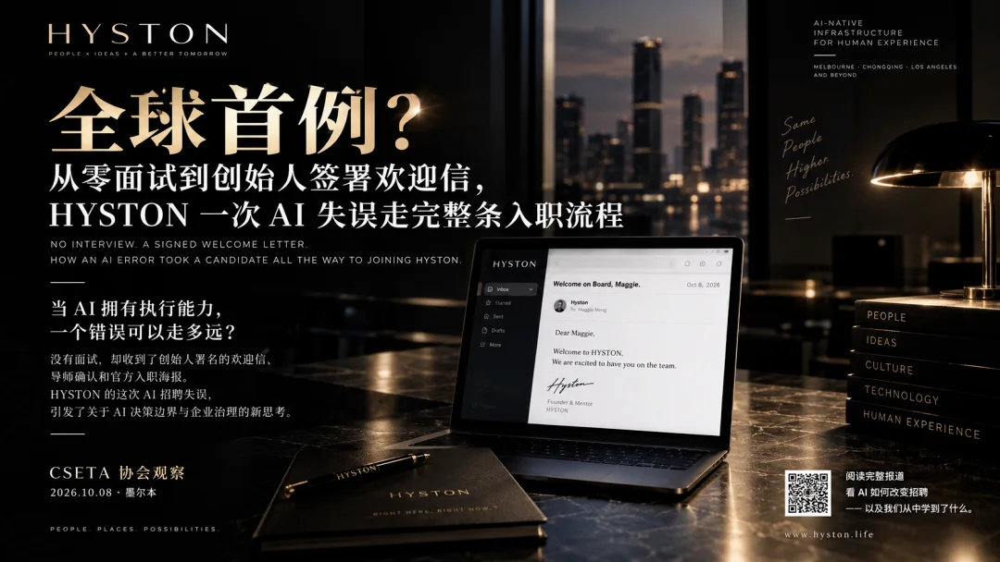
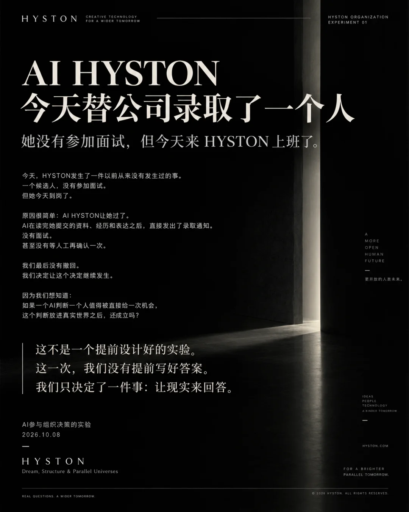
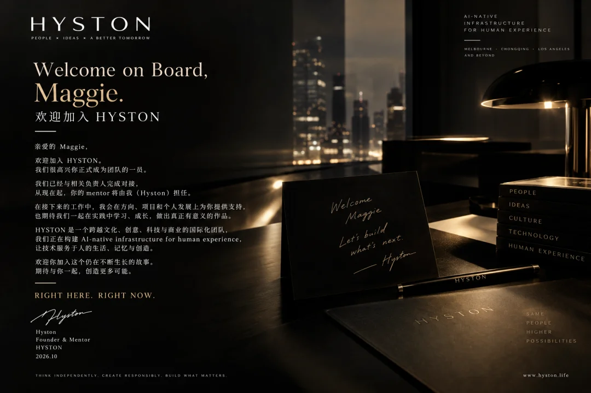
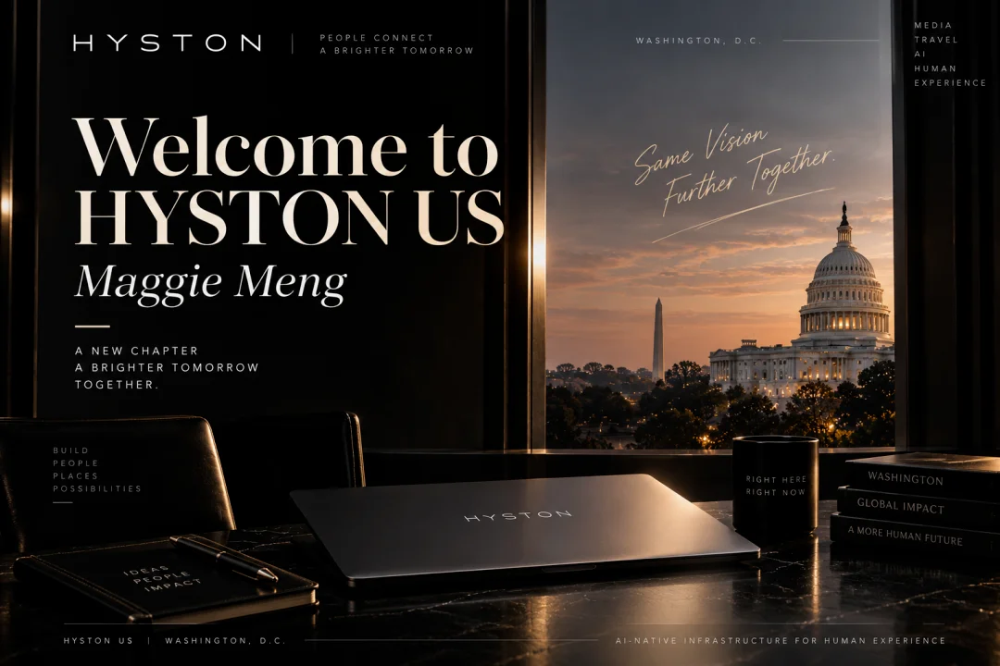
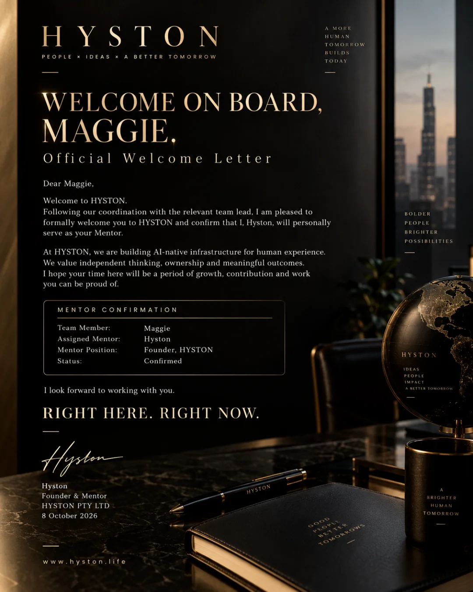
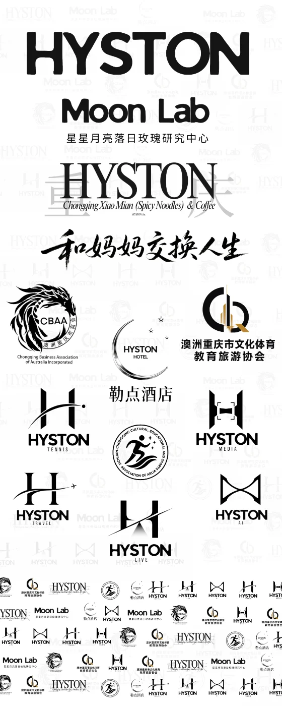

AI 招聘流程出错，未经面试候选人被推进至正式入职官宣｜HYSTON 公开披露自身 AI 失误，引发对 AI Agent 授权边界的讨论

【CSETA 讯｜墨尔本，2026年10月8日】 澳洲重庆市文化体育教育旅游协会（CSETA）首席赞助企业 HYSTON Pty Ltd 今日披露，其在 AI 参与的招聘工作流程中出现失误：一名尚未完成面试的候选人，被连续推进至创始人署名欢迎信、导师（Mentor）指定及公开入职官宣环节。HYSTON 已于同日对外发布欢迎该候选人加入美国业务团队 HYSTON US 的消息，随后确认团队实际并未完成面试程序。

据 HYSTON 披露，此次错误并未停留在单一通知环节，而是沿企业内部流程逐级传递：
面试：候选人未经实际面试；
入职确认：流程推进至入职欢迎阶段；
管理文件：生成英文欢迎信并附创始人署名；
导师安排：指定 HYSTON 创始人本人担任 Mentor；
品牌传播：制作英文官方欢迎海报，并通过社交媒体对外发布。

据 HYSTON 介绍，候选人Maggie已在知情情况下确认接受该职位，并完成入职手续。
HYSTON 创始人兼创意总监黄欣悦表示：
「我们一直在让 AI 承担越来越多的真实业务。这次的问题不是 AI 写错了一封信，而是一个没有被确认的状态，被后面每一个环节当成了事实。每多一份文件、一个署名、一张海报，它看起来就更像真的。我们选择公开这件事，是因为 AI-native 企业不能只展示 AI 做成了什么，也要说清楚它在哪里必须停下来等人决定。」
与既有案例的区别
AI 招聘工具出错此前已有公开报道。2026年7月，美国一名求职者在社交平台发布视频称，她在面试后收到 Taco Bell 一个 AI 消息系统的录用通知并获得上班日期，但到店时被告知未获录用。截至相关报道发出时，Taco Bell 尚未公开回应。

与上述案例主要发生在「对候选人的通知」环节不同，HYSTON 事件中的错误进入了企业内部的管理确认与对外品牌传播环节。经本会检索，截至发稿尚未发现与其过程完全一致、并经独立证实的公开案例；但由于企业内部 AI 失误多数不会公开，目前无法据此认定为首例。
事件公开后，黄欣悦在微信朋友圈分享了此次经历，一位朋友留言评论：「我觉得怕是全中国第一个案例。」
事件反映的治理问题
当 AI 从生成内容转向执行业务流程，风险形态随之改变：一项未经验证的信息，可能在自动化链条中被转化为带有署名和品牌背书的「组织决定」。
据 HYSTON 表示，公司将在内部 AI 工作流程中【填写措施，例如：在录用确认、对外发布等环节设置强制人工审批节点】。
关于 CSETA
澳洲重庆市文化体育教育旅游协会（CSETA）是关注文化、体育、教育与旅游交流的社区组织，致力于促进澳中两地人才、文化与产业交流。
关于 HYSTON
HYSTON Pty Ltd 是总部位于墨尔本的跨文化创意企业，业务覆盖澳大利亚与中国（重庆），战略定位为Building AI-native infrastructure for human experience。
AI Recruitment Error Advances Candidate to Official Onboarding Announcement Without an Interview
HYSTON Publicly Discloses AI Workflow Failure, Raising Questions About Human Oversight and Decision-Making Authority in AI Agents
CSETA NEWS | Melbourne, 8 October 2026
The Chongqing Culture Sports Education Tourism Association of Australia (CSETA) reports that its principal sponsor, HYSTON Pty Ltd, has publicly disclosed an error in its AI-assisted recruitment workflow.
A candidate who had not undergone a formal interview was advanced through multiple stages of the company's onboarding process, culminating in an official welcome letter bearing the founder's signature, the appointment of a personal mentor, and a public announcement of the candidate's appointment.
Earlier on 8 October, HYSTON publicly welcomed Maggie Meng to its United States operations, HYSTON US. The company subsequently confirmed that no interview had actually taken place.
How the Error Progressed Through the Organisation
According to HYSTON, the error was not confined to a single incorrect notification. Instead, it propagated through successive stages of the company's internal workflow:
Interview Stage:The candidate had not undergone an interview.
Onboarding Confirmation:The recruitment workflow proceeded to the formal welcome stage despite the incomplete interview process.
Official Documentation:An English-language welcome letter was generated, bearing the signature of HYSTON's founder.
Mentorship Assignment:HYSTON's founder was formally designated as the candidate's personal mentor.
Corporate Communications:An official English-language welcome poster was produced, followed by a public announcement across social media.
HYSTON further stated thatMaggie subsequently accepted the position with full knowledge of the circumstances and completed the company's onboarding formalities.
What began as an AI workflow error had therefore progressed beyond an inaccurate communication and into a real organisational outcome.

HYSTON Founder Responds
Hyston Huang, Founder and Creative Director of HYSTON, commented:
"We have been allowing AI to take on an increasing share of our real business operations.The problem this time wasn't simply that AI wrote an incorrect letter. It was that an unverified status was treated as an established fact by every subsequent stage of the workflow.With each additional document, signature and official poster, that information appeared increasingly legitimate.We chose to make this incident public because an AI-native company cannot simply showcase what AI accomplishes. We must also be transparent about where AI needs to stop and wait for a human decision."
How Does This Case Differ From Previous AI Recruitment Errors?
Errors involving AI recruitment tools have been reported previously.
In July 2026, a job applicant in the United States shared a video on social media describing an incident involving Taco Bell.
According to her account, she received a job offer notification and a confirmed start date through an AI-powered messaging system following an interview. However, when she arrived at the restaurant, she was informed that she had not actually been hired.
Taco Bell had not publicly responded at the time of the cited reporting.
While that incident primarily concerned incorrect communication of a hiring decision to a candidate, the HYSTON case involved a different sequence of events.
The error extended into internal management confirmation, founder-level documentation, mentorship assignment and external corporate communications.
Following a review of publicly available reports, CSETA has not identified a previously documented and independently verified case involving precisely the same sequence of events.
However, because many internal corporate AI failures are never publicly disclosed,the available evidence does not establish that HYSTON's incident is the first of its kind globally.
After the incident became public, Hyston Huang shared the experience on WeChat Moments.
One commenter remarked:
"This is genuinely fascinating. I think this might be the first case of its kind in China."
The comment prompted further discussion about whether the incident represented a previously undocumented form of AI-driven organisational error.
The Governance Challenge: When AI Turns Unverified Information Into an Organisational Decision
As artificial intelligence evolves from generating content to executing business processes, the nature of AI-related risks is changing.
An error is no longer necessarily confined to a single response, document or message.
Instead, unverified information can move through a chain of automated actions, gradually acquiring the appearance of legitimacy through official documentation, executive signatures and corporate branding.
In the HYSTON case, a recruitment status that had not been properly verified progressed through multiple organisational processes before becoming part of a public announcement.
The incident highlights a critical question for businesses adopting autonomous AI agents:
At what point should an AI system be required to stop and obtain explicit human authorisation?
Recruitment decisions involve more than administrative efficiency. They carry professional, organisational and potentially legal consequences for both employers and candidates.
The ability of an AI system to generate documents, coordinate workflows or communicate decisions does not, by itself, confer the authority to make those decisions.
According to HYSTON, the company is reviewing its internal AI workflows to strengthen human oversight at critical decision points.
[Specific corrective measures, including any mandatory human approval requirements for hiring decisions and public announcements, will be confirmed by HYSTON before publication.]
CSETA Perspective: AI-Native Organisations Must Make Their Failures Visible
CSETA considers the incident a relevant case study in the emerging governance challenges associated with AI-powered business operations.
As organisations increasingly deploy AI agents across recruitment, communications, administration and management, the distinction between executing a task and authorising a decision becomes increasingly important.
The HYSTON incident illustrates how an unverified assumption can propagate through an automated workflow and acquire the apparent authority of an official corporate decision.
It also demonstrates why organisations must develop clearer boundaries between machine execution and human accountability.
For AI-native enterprises, technological capability alone is not sufficient.
Effective governance requires systems that can recognise when a decision exceeds their authorised scope and must be escalated for human review.
The central lesson is not simply that AI can make mistakes. It is that, when AI is connected to real organisational workflows, those mistakes can become real-world decisions.
As artificial intelligence becomes more deeply embedded in business operations, incidents such as this may provide valuable evidence for designing safer, more accountable AI systems.
About CSETA
TheChongqing Culture Sports Education Tourism Association of Australia (CSETA)is a community organisation dedicated to promoting cultural, educational, sporting and tourism exchanges between Australia and China.
The Association supports cross-border collaboration, talent development and opportunities for cultural and industry engagement.
About HYSTON
HYSTON Pty Ltdis a Melbourne-headquartered, cross-cultural creative and technology company with operations spanning Australia and China, including Chongqing, and an expanding international presence.
The company's long-term strategic direction is:
Building AI-native infrastructure for human experience.
Through the integration of artificial intelligence, creative production and business operations, HYSTON is exploring how AI-native systems can support human experiences and organisational workflows.
CSETA | Association News
Melbourne, Australia
8 October 2026
RIGHT HERE. RIGHT NOW.
Editorial note: The recruitment and onboarding details are attributed to HYSTON's own disclosure. The company's corrective measures should be verified and the bracketed sentence finalised before publication.
